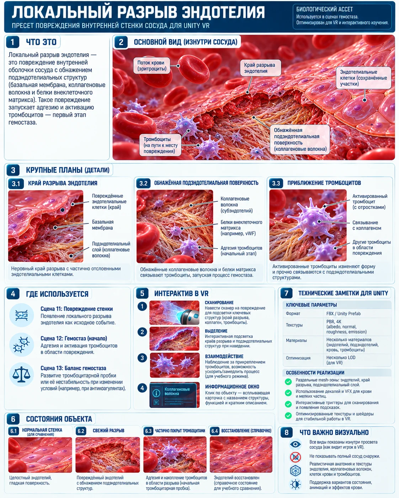

Патология/часть · preset
Локальный разрыв эндотелия
Край разрыва и обнажённый субэндотелиальный матрикс.

Роль в проекте
Используется в: 11 — Повреждение стенки сосуда, 12 — Гемостаз, 13 — Баланс гемостаза
Рекомендации для Unity
- Сценарный Prefab с несколькими состояниями
- ScannerTarget + игровые триггеры
- LOD и отдельные коллайдеры у целей
- Состояния синхронизируются с HUD и информационным экраном